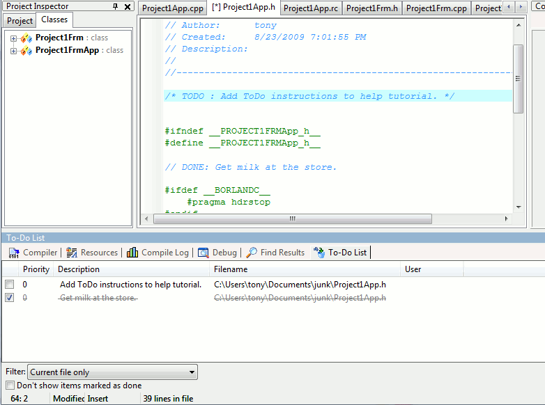

wxDev-C++ provides a way to keep track of your "ToDo" list from within
your program's comments. This makes it easy to keep track of incomplete
sections of your source code.
Just embed C/C++ style comments within your code that are prefaced by
the idenitifer "TODO:". For example,
/* TODO : Add ToDo instructions to
help tutorial. */

When the project is reloaded, the "ToDo List" will be displayed.
Clicking on the check mark to the left of the ToDo will
change mark the item as "Done". Double-clicking on the ToDo item will
move the editor to that line in the source.
To specify the priority of the ToDo item, add the identifier "(#n#)" to
the "TODO :". For example,
// TODO (#2#) : Add ToDo instructions to help
tutorial.
will set the priority level to 2 for this item.
Note that the dropdown box labeled "Filter" allows you to view ToDo's
that are within your current open file or within an combination of
files in and out of your project.